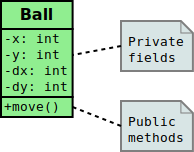
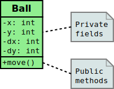
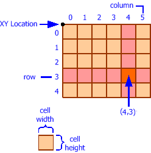
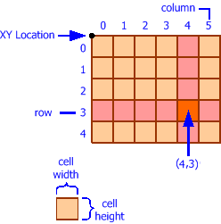

- Funzione: operatore, applicato a operandi, per ottenere un risultato
funcper definire una funzionereturnper terminare la funzione e restituire un risultato
func Hypotenuse(a, b float64) float64 {
c := math.Sqrt(a*a + b*b)
return c
}

Michele Tomaiuolo
Ingegneria dell'Informazione, UniPR
func per definire una funzionereturn per terminare la funzione e restituire un risultatofunc Hypotenuse(a, b float64) float64 {
c := math.Sqrt(a*a + b*b)
return c
}
func definisce una funzione, ma non la esegue!func main() {
side1 := ToFloat(Prompt("1st leg?"))
side2 := ToFloat(Prompt("2st leg?"))
side3 := Hypotenuse(side1, side2)
Println("3rd side: ", side3)
}
return 7, 5, "black"func Inc(a int) int {
a += 1
Println(a) // just for debug
}
func main() {
x = 10
Inc(x)
Println(x) // just for debug
}
go doc: comando per visualizzare la documentazione// Return the hypotenuse of a right triangle,
// given both its legs (catheti).
func Hypotenuse(leg1, leg2 float64) float64 {
return math.Sqrt(leg1*leg1 + leg2*leg2)
}

max := 10
y := 3
for x := 1; x <= max; x++ {
Println(x * y)
// Printf("%4d", x * y)
}
max := 10
for y := 1; y <= max; y++ {
for x := 1; x <= max; x++ {
Printf("%4d", x * y) // width = 4, no newline
}
Println()
}
g2d.Printf: scrittura con formattazione%) per incorporare i parametri successivi\n per andare a capoPrintf("%2d", 3) // " 3", int, width 2
Printf("%6.2f", 7.3) // " 7.30", float, width 6, precision 2
Printf("%d", 'üåê') // "127760", code
Printf("%c", 'üåê') // "üåê", char
Printf("%s", "hi!") // "hi!", string
return, solo I/O ed effetti collateralifunc printRow(y, size int) {
for x := 1; x <= size; x++ {
Printf("%4d", x * y)
}
Println()
}
func printTable(size int) {
for y := 1; y <= size; y++ {
printRow(y, size)
}
}
var image = LoadImage("ball.png")
var x, y, dx = 50, 50, 5
var screen = Size{480, 360}
func tick() {
//if KeyPressed("Enter") { ... }
//if x + dx > screen.W { ... }
ClearCanvas() // Draw background
DrawImage(image, Point{x, y}) // Draw foreground
x += dx // Update ball's position
}
func main() {
InitCanvas(screen)
MainLoop(tick) // Call tick 30 times/second
}
g2d.MainLoop: ciclo di gestione degli eventig2d.KeyPressed: controllo se un tasto è stato premutoboolstring nome del tasto"q", "1", "ArrowLeft", "Enter", "Spacebar", "LeftButton"g2d.KeyReleased: controllo se un tasto è stato rilasciatog2d.MousePosition: posizione del mousePointhttps://developer.mozilla.org/en-US/docs/Web/API/KeyboardEvent/key/Key_Values

func moveBall(x, y, dx, dy int) (int, int, int, int) {
if x + dx < 0 || x + dx + size.W > screen.W {
dx = -dx
}
if y + dy < 0 || y + dy + size.H > screen.H {
dy = -dy
}
return x + dx, y + dy, dx, dy
}
z := f(Sqrt(2), Sqrt(2))s := Sqrt(2) z := f(s, s)p := rq(x) + rq(y) * (rq(x) – rq(x))p := rq(x) + rq(y) * (0)p := rq(x) + 0p := rq(x)rq ha effetti collaterali, non si può!var baseValue = 0 // global variable
func rq(x int) int {
baseValue++
return x + baseValue
}
Se x, y = 3, 4, ad esempio, i due risultati sono -2 e 4
& per indirizzo di un dato* per accesso a dato puntatovar i int8 = 56 // one byte
var p *int8 // a ptr to some byte (uninitialized)
p = &i // now p points to i
*p = *p + 1 // i++
Println(*p, i)
p = nil // ptr to nothing
Come in C, ma senza “aritmetica”


 

type Ball struct {
x, y int
w, h int
dx, dy int
}
func NewBall(pos Point) *Ball {
b := &Ball{pos.X, pos.Y, 20, 20, 5, 5}
return b
}
NewBall: funzione costruttoreball := NewBall(Point{40, 80}) // Allocation and initialization
var arenaW, arenaH = 480, 360
func (b *Ball) Move() {
if !(0 <= b.x+b.dx && b.x+b.dx <= arenaW-b.w) {
b.dx = -b.dx
}
if !(0 <= b.y+b.dy && b.y+b.dy <= arenaH-b.h) {
b.dy = -b.dy
}
b.x += b.dx
b.y += b.dy
}
func (b *Ball) Position() Rect {
return Rect{b.x, b.y, b.w, b.h}
}
func main() {
b1 := NewBall(Point{40, 80}) // Create two objects,
b2 := NewBall(Point{80, 40}) // instances of the Ball class
for i := 0; i < 25; i++ {
b1.Move()
b2.Move()
Println("Ball 1 @", b1.Position())
Println("Ball 2 @", b2.Position())
}
}
var b1 = NewBall(Point{40, 80})
var b2 = NewBall(Point{80, 40})
func tick() {
ClearCanvas() // BG
b1.Move()
b2.Move()
FillRect(b1.Position()) // FG
FillRect(b2.Position()) // FG
}
func main() {
InitCanvas(Size{arenaW, arenaH})
//SetFrameRate(30) // default
MainLoop(tick)
}
(x, y) e la sua direzione (dx, dy)
EllipseArea che:a, bπ⋅a⋅bmain che:EllipseArea con questi parametri 

rows e colsrows×colsCominciare a creare una griglia di riquadri tutti neri, con due cicli annidati
Lasciare tra i riquadri un piccolo margine

dx indica lo spostamento da effettuare ad ogni ciclox della pallina di superare i bordi laterali100px (p.es.) rispetto ai bordi dell'arenax raggiunge uno dei margini esterni, viene riportata al margine oppostoEnter, la pallina inverte la direzione
EnterIncrementare (o decrementare) un contatore ad ogni chiamata a tick
a, bπ⋅a⋅b2⋅√|a2 - b2|
Ball vista a lezionemove della pallinaMove
Ball vista a lezioneEnter
Ball vista a lezione
Move()xc, yc, ii conta i passi; se eccede il limite, torna a 0
Michele Tomaiuolo
Palazzina 1, int. 5708
Ingegneria dell'Informazione, UniPR
sowide.unipr.it/tomamic